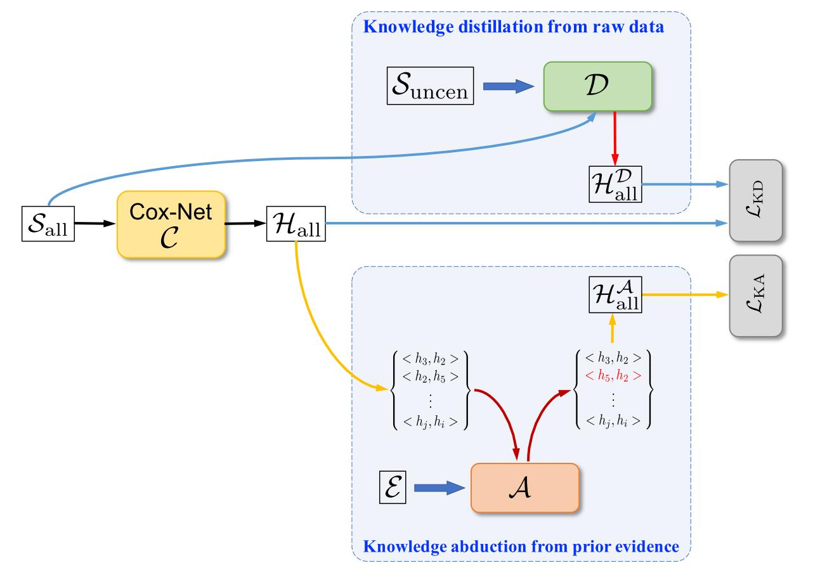

What is KDKA?
KDKA, in short of Knowledge Distillation and Knowledge Abduction, is a machine learning method for
genomic survival analysis, proposed in A Unified Method of Knowledge Distillation and Knowledge
Abduction for Genomic Survival Analysis.
It is built based on a Cox-Net model
, and further consists of two crucial modules, i.e., KD (knowledge distillation from raw data) and KA (knowledge abduction from prior evidence).
Finally, two losses
and
derived from these two modules are calculated to drive end-to-end network training.

Quick start
You can get KDKA simply by:
$ git clone git@github.com:HiangX/KDKA.git
$ cd KDKA
$ pip install -r requirements.txt
$ python setup.py install
For detailed installation instruction, please refer to installation guide.
KDKA provides several optional usages for different users.
-
For the users who are less familiar with python and want to simply apply KDKA to a dataset.
Please refer to tutorial to run
the KDKA process in a few lines of codes without knowing about any background knowledge.
-
For the users who want to learn about the implemention details and perform their own experiments.
Please refer to GitHub
and tutorial to learn the details.